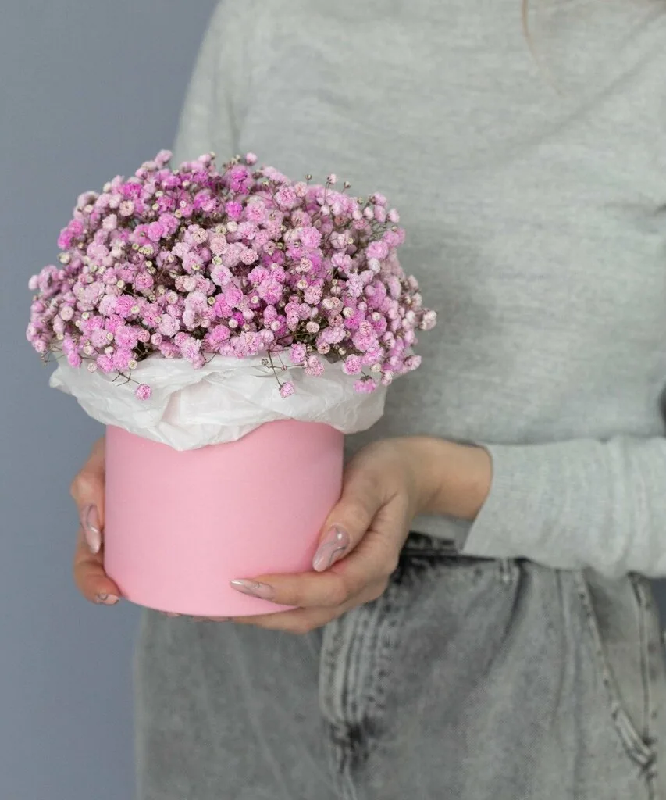
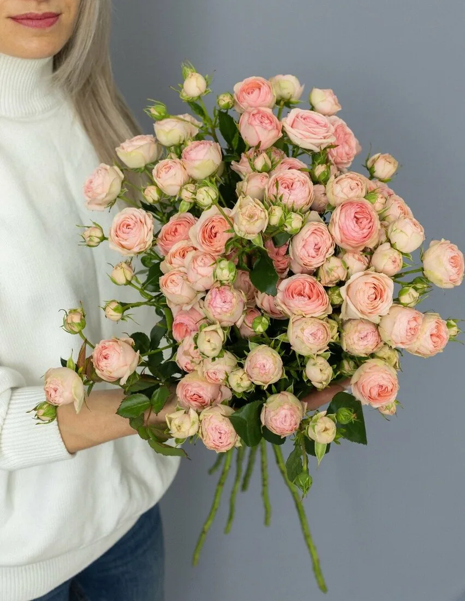
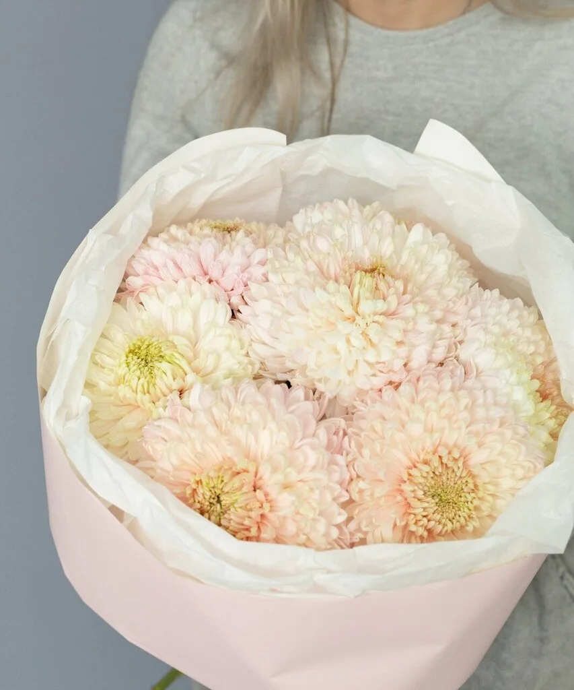
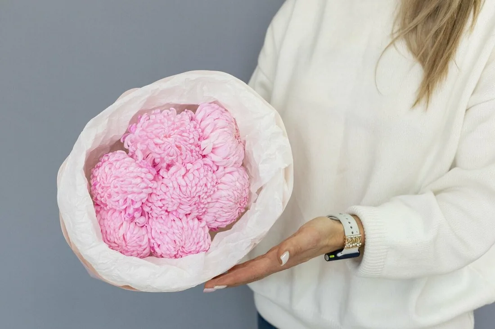
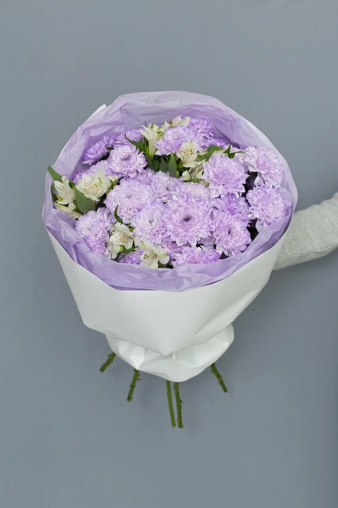
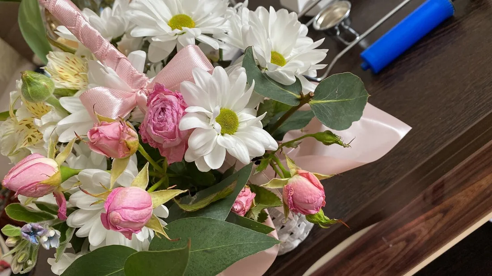
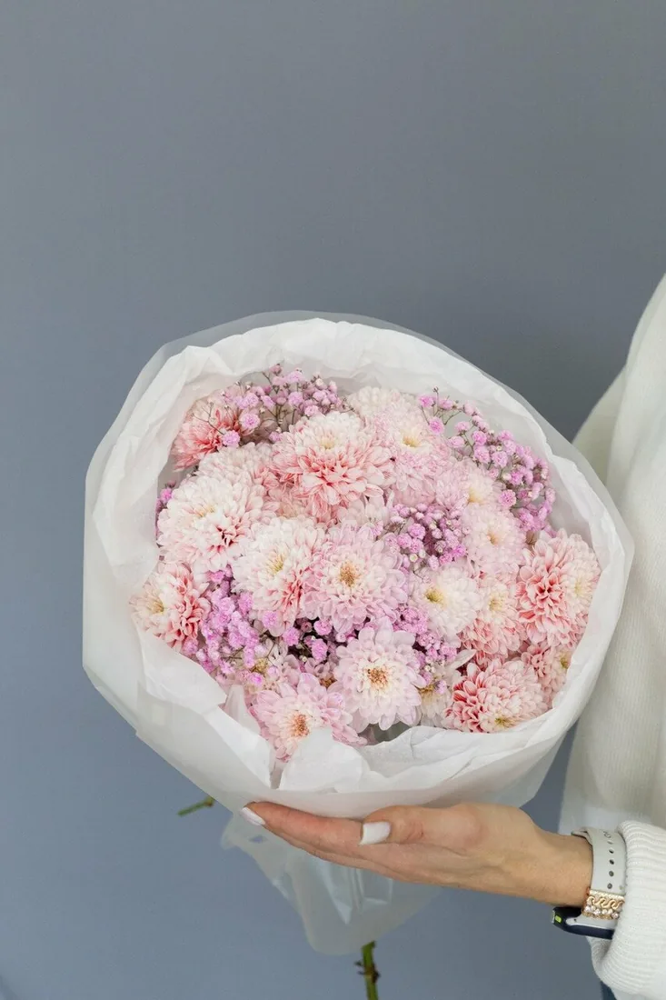
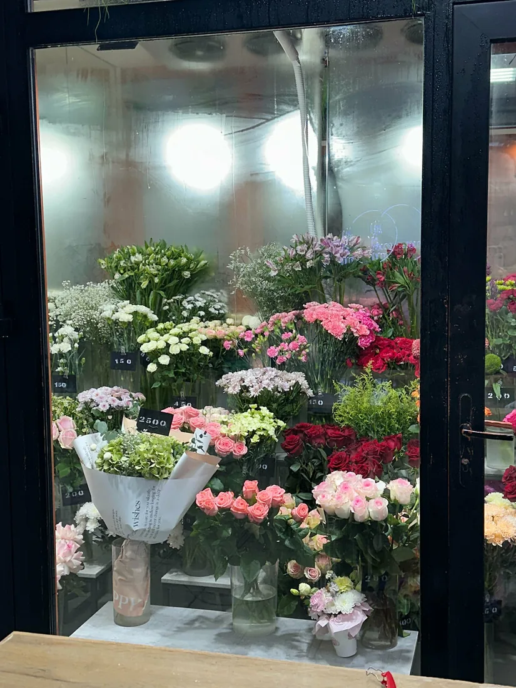
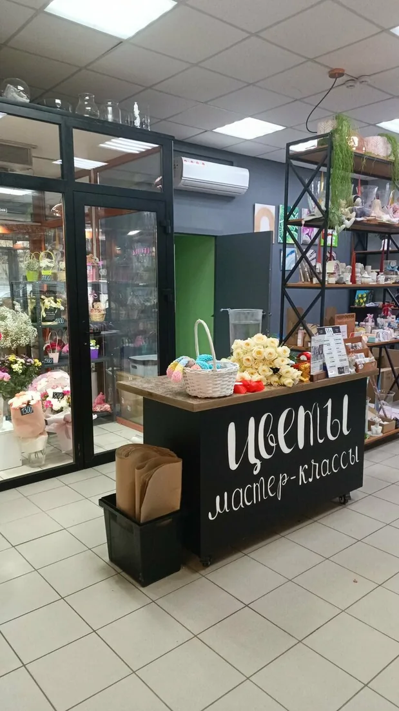
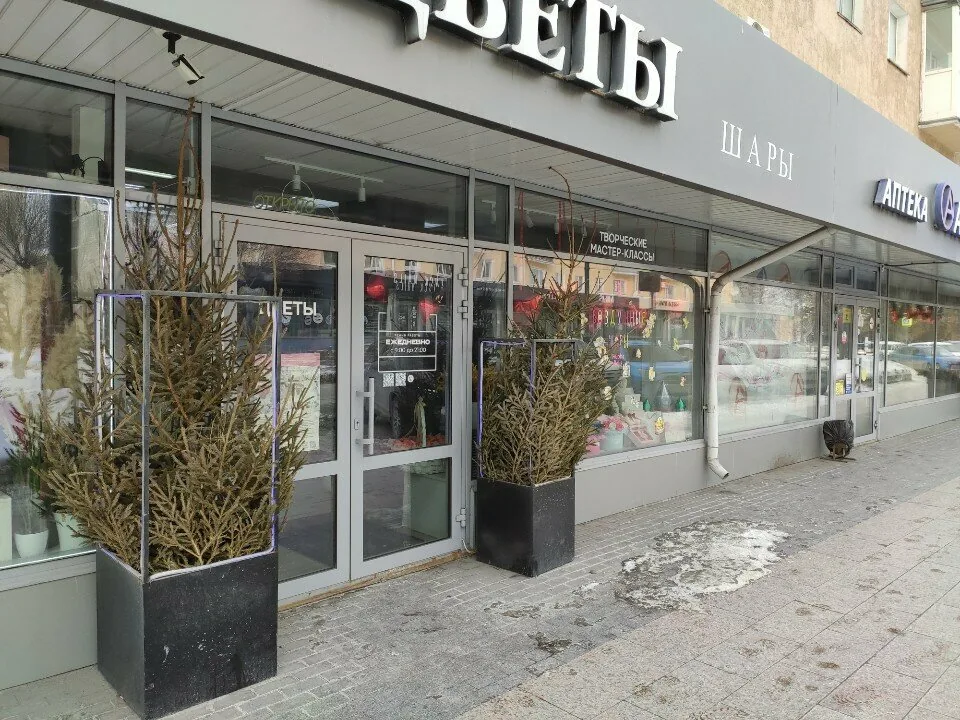

Цветы в коробке
Не нужна ваза – удобно дарить в офис и в гости
от 2000 ₽Ленина, 30 · каждый день 10:00–22:00
Букеты, монобукеты и цветы в коробке – а рядом то, что останется после них: букеты из конфет и зефира, мыльные розы, аромасвечи и игрушки ручной работы. Соберём подарок под ваш бюджет.
Цветы
От скромного монобукета до авторской работы флориста. Цены – стартовые, точную сумму назовём в WhatsApp или по телефону.

Не нужна ваза – удобно дарить в офис и в гости
от 2000 ₽Один вид цветов – чисто и выразительно
от 1950 ₽
Флорист соберёт от и до
от 7125 ₽Подарок, который не завянет
Для тех, кто «не любит цветы», для коллег и для мам, которым хочется чего-то ещё. Всё можно взять вместе с живым букетом – одним заходом.
«Есть различные букеты, например из конфет Рафаэлло или из сладостей.»Владислав Волков
«я купила маме букет из сладостей, выглядит потрясающе!»Анна Воронкова
Подбор
В магазине, в WhatsApp или Telegram. Предложим варианты под ваш бюджет.
Расскажем, как продлить жизнь букету дома.
Самовывоз с 10:00 до 22:00, доставка в течение дня: {{стоимость и зона доставки}}
«Подберут, посоветуют по букетику. Внимательно, бережно, хороший выбор цветочков. … Дали рекомендации по уходу!»Елена Ш.
«Девушка на кассе помогла выбрать самый хороший букет, а самое главное по низкой цене!»Артём Москаленко
«Так же вечером есть скидки на готовые товары.»Владислав Волков

Свадьба и праздник издалека
Напишите в WhatsApp, какие цветы и оттенки хотите. Предложим варианты, учтём пожелания и соберём букеты к нужному дню.
«Живу в другом городе, а свадьба в Омске. Сработали на отлично. Учли все пожелания, предложили варианты.»Алена К., заказывала свадебные букетыОбсудить в WhatsApp
Наши букеты






Мастер-классы
В магазине проходят творческие мастер-классы. Темы, даты и цены: {{мастер-классы: что, когда, цена}}
Отзывы
4,515 оценок на Яндекс Картах
На днях покупал жене тут цветы. По началу сомневался ведь отзывов нету. Но на деле оказалось совершенно другое! Девушка на кассе помогла выбрать самый хороший букет, а самое главное по низкой цене! Цветы свежие, отлично пахнут. Цветы стоят уже 3 день в вазе и отлично себя чувствую! Теперь буду только тут цветы покупать👍👍
Заказывала букеты на свадьбу. Живу в другом городе, а свадьба в Омске. Сработали на отлично. Учли все пожелания, предложили варианты. Букеты получились отличные!
Здравствуйте! узнала что мой молодой человек купил цветы в этом магазине на 8е марта. мне очень понравились! сходила посмотрела сама, большой ассортимент, отличные цены. Юлия очень хорошая девушка, помогла, посоветовала. я купила маме букет из сладостей, выглядит потрясающе! очень советую сюда сходить, девочки сотрудницы большие молодцы красавицы, желаю успехов!!<3
Отличный цветочный! Подберут, посоветуют по букетику. Внимательно, бережно, хороший выбор цветочков. Дали рекомендации по уходу!
Широкий ассортимент. Есть различные букеты, например из конфет Рафаэлло или из сладостей. Продавец Елена была вежлива, помогла выбрать букет. Цены низкие. Так же вечером есть скидки на готовые товары.
Благодарю за качественную работу персонала и прекрасный букет. Буду рекомендовать своим друзьям и знакомым. Очень стойкие оказались цветы в букете!! Еще раз спасибо.
Хороший магазин, покупал цветы девушке, и ей очень понравилось. Красивый интерьер, лояльные цены, рекомендую!
Отличный магазин. Душистые цветы и низкие цены. Интерьер в здании приятный, подходящий для сервиса.
Очень хорошая обслуживание и очень приятные сотрудники и мне еще очень понравилось приятная отмаосвера,и хороший осортимент товаров
Отличный сервис, персонал очень вежливый и поможет в любом вопросе. Рекомендую всем!
Адрес

Открыть на Яндекс КартахИщите вывеску «Цветы»